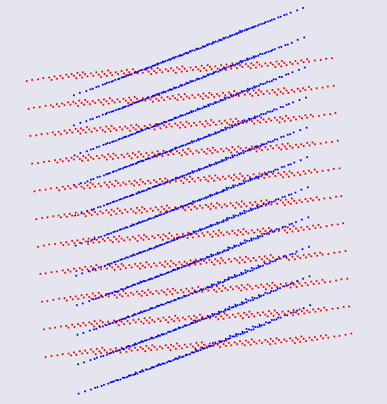

19. Posture and Movement Prediction¶
Caution
Old tutorial: This tutorial has not yet been updated to ver. 7 of the AnyBody Modeling System. Some concepts may have changed.
Just about every example you find in these tutorials is based on the concept of inverse dynamics, which in some sense is the opposite of forward dynamics. To understand the difference between these two concepts it is useful to have a brief look at Newton’s second law. It states the following:
F = m a
where F is the vector of resulting forces acting on a body with mass m causing an acceleration vector, a. So, if we know the acceleration, i.e. the movement of the system, then we can find the forces acting on it. That is inverse dynamics, and this is why AnyBody usually requires us to specify the movement or posture of the model before it can compute anything for us.
But we can also re-arrange the equation to this form:
a = F/m
In this version, if we know the forces, we can determine the movement. This is called forward dynamics. The problem with forward dynamics is that input to the analysis will be some information about the muscle forces and this is usually hard to determine experimentally and even more difficult to guess.
But what if we know neither the movement nor the muscle forces? In that case we have two unknowns and only one equation and it seems like our venture into musculoskeletal analysis is destined to failure no matter what we do. This tutorial shows how the optimization capability in AnyBody can help you solve that kind of problems. They technically go under the name “Posture and Motion Prediction” and the idea is that rather than inputting a known posture or movement we want the model to predict how a human body is likely going to move in a given situation. Since this involves optimization and optimization takes time we are going to formulate a very simple problem, but the principle applies to much more complex models as well.
Understanding this tutorial requires a-priory knowledge of the tutorial on Parameter Studies and Optimization.
Definition of the Problem¶
As the name indicates, in posture and movement optimization we use optimization to compensate for the fact that we do not know the movement a-priori. So, instead of feeding the movement to the analysis we have to feed something into an optimization problem, and that something has to be the ultimate goal of the movement.
For some movements this goal is quite obvious. The objective of a high jump, for instance, is to jump as high as possible, so we could simply ask the optimizer to determine the movement pattern that leads to the highest possible jump. Of course it would not be allowed to have movements that require more muscle strength than the body has available, so we would also have to formulate a constraint ensuring that the maximum muscle activation stays below 100%.
For other movements the goal is less clear. If we want to predict the movement of lifting a coffee cup from the table to the mouth then what would a reasonable goal be? The constraints are rather easy: Start at the table, end at the mouth, keep the cup horizontal all the time, avoid accelerations that would spill the coffee and so on, but many different movements would honor those conditions. Which of them would be the one a given person would actually choose? Some investigations indicate that for submaximal tasks like this, a lazyness criterion often applies; we try to get around the task as effortlessly as possible in some sense. But we really do not know. In this case, the user could try different objectives and decide on one that leads to a plausible movement.
A Football Kick¶
So we need a simple model to play with. We are going to try to optimize
a two-dimensional football kick. There are all sorts of reasons why a
simple model of this task might be totally inadequate, but it will serve
well to demonstrate the idea. Please download a model to begin on.
Right-click the link and save the file
Kick1.any in some working directory. Then open
it up in the AnyBody Modeling System, load it in and open a Model View
window to have a look at the model. You should see something like this
(except the legends):

It is a two-segment model with revolute joints at the hip and the knee, so it has in total two degrees of freedom. Let us imagine that no motion capture experiment has been performed, so we do not really know how the model will kick. But we have made the initial guess that both of the two joints are moving with constant velocity just to have some movement to look at. Please select the InverseDynamicAnalysis operation and run it. You will be rewarded with a very fast analysis but should be able to see that the leg performs a kick.
The system also gives you the following warning:
MyStudy : The muscles in the model are not loaded due to kinetically over-constrained mechanical system.
MyStudy.InverseDynamics : No muscles in the model. 49) …Inverse dynamic analysis completed
We get this message because the model has no muscles and the necessary joint torques to produce the movement are provided by the drivers. We are going to want the model to relate to realistic joint strengths as opposed to the infinitely strong driver reaction moments. On the other hand we want to keep it simple. So rather than defining a lof of muscles representing the real anatomy of the leg we shall just add “joint muscles” to the hip and knee joints representing realistic strengths. We are going to need such joint muscles for flexion and extension respectively for both of the two joints. The red lines below add such muscles with realistic joint strengths in Newton-meter. For an explanation of the use of the AnyGeneralMuscle class, please refer to the muscle modeling tutorial.
AnyKinEqSimpleDriver KneeDriver = {
DriverPos = {-90*pi/180};
DriverVel = {90*pi/180}/..MyStudy.tEnd;
AnyRevoluteJoint &Joint = .Knee;
};
// Hip joint muscles
AnyGeneralMuscle HipFlex = {
AnyMuscleModel Model = {F0 = 232;};
ForceDirection = 1;
AnyRevoluteJoint &Joint = .Hip;
};
AnyGeneralMuscle HipExtend = {
AnyMuscleModel Model = {F0 = 251;};
ForceDirection = -1;
AnyRevoluteJoint &Joint = .Hip;
};
// Knee joint muscles
AnyGeneralMuscle KneeExtend = {
AnyMuscleModel Model = {F0 = 554;};
ForceDirection = 1;
AnyRevoluteJoint &Joint = .Knee;
};
AnyGeneralMuscle KneeFlex = {
AnyMuscleModel Model = {F0 = 236;};
ForceDirection = -1;
AnyRevoluteJoint &Joint = .Knee;
};
Please copy and paste the red lines into your model just below the KneeDriver definition as indicated. Then remove the reaction moments from the drivers like this:
AnyKinEqSimpleDriver HipDriver = {
DriverPos = {-90*pi/180};
DriverVel = {90*pi/180}/..MyStudy.tEnd;
Reaction.Type = {Off};
AnyRevoluteJoint &Joint = .Hip;
};
AnyKinEqSimpleDriver KneeDriver = {
DriverPos = {-90*pi/180};
DriverVel = {90*pi/180}/..MyStudy.tEnd;
Reaction.Type = {Off};
AnyRevoluteJoint &Joint = .Knee;
};
After you reload and re-run the model you should be able to open a Chart window, plot the MaxMuscleActivity and get this:
The movement we have imposed is unrealistic. Both joints move with constant angular velocity while, in a realistic case, the model should capture the fact that it is necessary to accelerate the leg from some start position to the velocity it has at impact. To obtain a realistic and “designable” movement we have to replace the two simple drivers on the hip and knee with something more general. The interpolation driver is excellent for this purpose because it allows us to determine the position of each joint in certain time steps through the kick and subsequently will interpolate between those loctions to generate a smooth motion.
// AnyKinEqSimpleDriver HipDriver = {
// DriverPos = {-90*pi/180};
// DriverVel = {90*pi/180}/..MyStudy.tEnd;
// Reaction.Type = {Off};
// AnyRevoluteJoint &Joint = .Hip;
// };
//
// AnyKinEqSimpleDriver KneeDriver = {
// DriverPos = {-90*pi/180};
// DriverVel = {90*pi/180}/..MyStudy.tEnd;
// Reaction.Type = {Off};
// AnyRevoluteJoint &Joint = .Knee;
// };
// Some initial guesses for the hip and knee angle
// movements.
AnyKinEqInterPolDriver HipDriver = {
T = {0, 0.25, 0.50, 0.75, 1}*..MyStudy.tEnd;
Data = {{-30, -30, -15, 0, 30}}*pi/180;
Type = Bspline;
BsplineOrder = 4;
AnyRevoluteJoint &Joint = .Hip;
Reaction.Type = {Off};
};
AnyKinEqInterPolDriver KneeDriver = {
T = {0, 0.25, 0.50, 0.75, 1}*..MyStudy.tEnd;
Data = {{-70, -70, -50, -40, -30}}*pi/180;
Type = Bspline;
BsplineOrder = 4;
AnyRevoluteJoint &Joint = .Knee;
Reaction.Type = {Off};
};
A fast reload and run of the model will show that the movement is somewhat different now, and plotting the joint rotation velocities will also show that the initial velocity is now zero for both joints. This is ensured by using similar values for the first two points in each interpolation, for instance -30 and -30 degrees in the HipDriver. Now we could generate infinitely many different motions simply by inserting different angle values into these interpolation drivers. Among them will be the motion that generates the fastest kick without overloading the muscles. Unfortunately, infinity is a very high number and we could never finish searching for our solution and this is where the optimizer can help us. We ask the optimizer to determine the best movement by making these variations.
The Optimization Problem¶
We already have some data now that can be used in the definition of our optimization problem. The first question is: What do we actually want to optimize? Given that the mass of the foot and football are given in advance we can presume that maximising the velocity of the football after the impact is equivalent to maximizing the velocity of the foot before the impact. In fact, the law of conservation of momentum says something about that. If we presume the mass of the football to be 0.2 kg, the coefficient of restitution of the collision to be 0.5, which is typical for a football kick, and presume that the ball is at rest before impact then we have enough information to predict the velocity of the ball after the impact given the velocity of the foot before the impact. We can write this formula directly into the model like this:
// The study: Operations to be performed on the model
AnyBodyStudy MyStudy = {
AnyFolder &Model = .MyModel;
RecruitmentSolver = MinMaxSimplex;
Gravity = {0.0, -9.81, 0.0};
nStep = 50;
tEnd = 0.2;
AnyOutputFun BallVel= {
Val =
1.5*Main.MyModel.Shank.Mass*Main.MyModel.Shank.rDot[0]/(0.2+Main.MyModel.Shank.Mass);
};
};
Please load and run the model again, and then go to the Chart window and plot the new output function. You should see this:

The function shows the predicted post-impact velocity of the ball if the foot were to hit is at any time during the imposed movement. As expected, the exit velocity is higher the later in the movement the ball is hit because the foot velocity increases all the time.
We also want to be able to limit the muscle activation to prevent overloading of the muscles, and we make a similar function for that purpose:
// The study: Operations to be performed on the model
AnyBodyStudy MyStudy = {
AnyFolder &Model = .MyModel;
RecruitmentSolver = MinMaxSimplex;
Gravity = {0.0, -9.81, 0.0};
nStep = 50;
tEnd = 0.2;
AnyOutputFun BallVel= {
Val =
1.5*Main.MyModel.Shank.Mass*Main.MyModel.Shank.rDot[0]/(0.2+Main.MyModel.Shank.Mass);
};
AnyOutputFun MaxAct = {
Val = .MaxMuscleActivity;
};
};
With that we should be ready to define an optimization problem. A basic optimization study would look like this:
// Optimize the ball velocity after the kick.
AnyOptStudy OptStudy = {
LogFile = "OptStudy.log";
MaxIterationStep = 25;
Analysis = {
AnyOperation &op = ..MyStudy.InverseDynamicAnalysis;
};
// Constraint: All muscle activities below 100%
AnyDesMeasure MaxActivity = {
Val = max(..MyStudy.MaxAct()-1);
Type = LessThanZero;
};
// Objective function: Max horizontal velocity of the foot
AnyDesMeasure KickVel = {
Val = -max(..MyStudy.BallVel());
Type = ObjectiveFun;
};
};
Please copy and paste those lines into the model right after the end of MyStudy but before the final ending brace of the model. The study contains two AnyDesMeasures of which the first is the maximum activity minus one. The actual constraint is
max(Activity) < 100%
but, because AnyBody requires zero right hand sides for all its constraints, it is defined on the form
max(Activity) - 1< 0
The second AnyDesMeasure, KickVel, is defined as minus the maximum of the ball velocity. This is because AnyBody’s optimizer is set up to always perform minimization where we want to maximize the velocity. So we simply minimize the negative velocity instead. The max value is derived first, presuming that the kicker will decide to hit the ball at the optimal time in the kick.
Loading the model at this time will produce an error message because we have not defined any design variables yet. Let us begin with a single variable just to make sure we get it right before adding a lot of them:
// Objective function: Max horizontal velocity of the foot
AnyDesMeasure KickVel = {
Val = -max(..MyStudy.BallVel());
Type = ObjectiveFun;
};
AnyVar slack = 60*pi/180;
AnyDesVar Knee4 = {
Val = Main.MyModel.KneeDriver.Data[0][3];
Min = Val - .slack;
Max = Val + .slack;
};
This design variable controls the position of the fourth data point (remember that items in arrays are numbered from zero, so number three is the fourth position) in the knee joint driver. There are five point in total in each driver, but we do not want to include the last one in the optimization because it determines the position of the foot at the end of the analysis and we want this to be on the ball.
The variable names “slack” determines the upper and lower bound of the variations of joint angle position. We have placed this in a variable because it makes it easy to change the bounds simultaneously for all design variables later.
If you reload the model now you can actually already do an optimization with the single variable. Open the OptStudy branch of the tree on the left hand side of the screen, highlight “Optimization”, and click “Run. After a few moments the process will converge to a better kick. You can see how much better by going to the Chart view, openeing the OptStudy section and plotting “Main.OptStudy.Output.KickVel.Val”. You will see that the optimization decreased the value from about -9 to about -12, indicating an improvement of the ball velocity from 9 to 12 m/s.
Let us quickly add some more variables:
AnyVar slack = 60*pi/180;
AnyDesVar Hip3 = {
Val = Main.MyModel.HipDriver.Data[0][2];
Min = -30*pi/180;
Max = Val + .slack;
};
AnyDesVar Hip4 = {
Val = Main.MyModel.HipDriver.Data[0][3];
Min = Val - .slack;
Max = Val + .slack;
};
AnyDesVar Knee3 = {
Val = Main.MyModel.KneeDriver.Data[0][2];
Min = Val - .slack;
Max = Val + .slack;
};
AnyDesVar Knee4 = {
Val = Main.MyModel.KneeDriver.Data[0][3];
Min = Val - .slack;
Max = Val + .slack;
};
Notice how we have only added design variables for points 3 and 4 in each joint angle interpolation. This is because we want to retain the beginning and ending positions and we want to make sure the velocity in the beginning remains zero, which is accomplished by keeping the second point the same as the first point.
Running the optimization at this stage will make the problem converge in a few interations to an optimized ball velocity of a little over 13 m/s. If we plot the two joint accelerations we get:

The movement shows subtle signs of a whiplash action in the sense that the movement is initiated by a knee acceleration, which is taken over by the hip acceleration, after which the peak knee acceleration sets in after the hip acceleration has topped. However, more whiplash effect could be expected and the final ball velocity of 13 m/s is not very impressive for a football kick.
In other words, the movement is not entirely satisfactory. This could likely be because the optimizer does not have enough freedom to control the movement, and this can possibly be improved by adding additional points to the interpolation and making them variables in the optimization problem. Optimization problems are often ongoing projects in the sense that is it difficult to know when the model is good enough to capture the features of the body’s function that we are looking for.